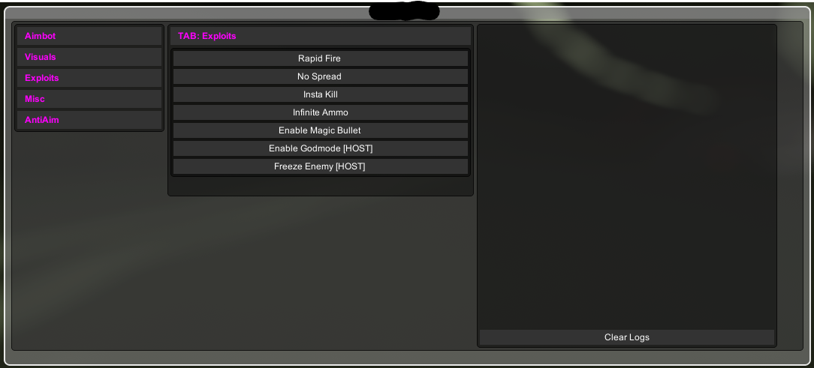

straftat.cc
Experimental feature-rich cheat
Open Source

Overview
A private project focused on bypassing complex anti-cheat measures in Minecraft environments. Built with C# for Unity games, focusing on robustness and ease of maintenance.
Key Features
- Aimbot: 360 FOV, Auto Fire, Vis Check.
- Visuals: 3D Box, Name, Health ESP.
- Exploits: Rapid Fire, Infinite Ammo, No Spread, InstaKill.
- Host Features: Freeze Enemy, Godmode.
- Misc: Speed Hack, Fly, Teleport, Unlock Achievements.
Tech Stack
C#
Unity
Mono